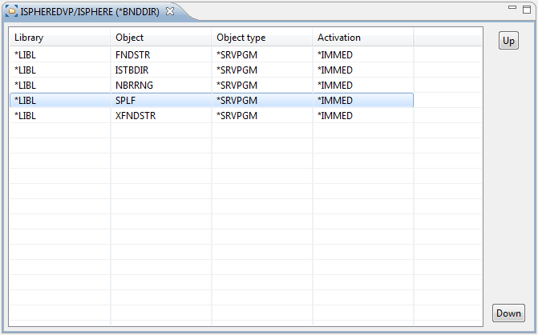
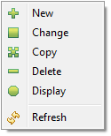

The Binding Directory Editor gives you the ability to edit binding directory entries within a binding directory.
The Binding Directory Editor gives you the ability to edit binding directory entries within a binding directory.
To edit the binding directory entries of a binding directory do the following.

Use the context menu to edit a message description:

With IBM i V6R1M0 IBM has added the parameter value "Activation" to parameter OBJ of command ADDBNDDIRE. If on a server is not installed at least V6R1M0 you have to execute the following command on this server in order to work with this feature of the iSphere plug-in. You have to replace the value VxRxMx with the installed release on this server. For example V5R4M0.